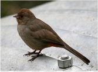
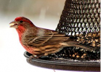
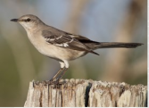
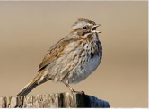
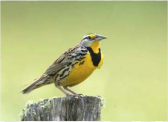
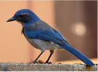

There are many different types of California Backyard Birds. Here are some different birds that you can find sometimes in your very own backyard.
For more information on birds, try going to Project FeederWatch

I'M CALIFORNIA TOWHEE GLAMOUR BIRDI may be promoted by a tireless knocking at your window or car mirror. |

I'M A HOUSE FINCH BIRDI build my nest in cavities, buildings, hanging plants, and other cup-shaped outdoor decorations. |

I'M A NORTHERN MOCKINKBIRDMy mimicking ability, as reflected by name means 'many-tongued mimic.' |

I'M A SONG SPARROW BIRDI use melodious and fairly complex song to declare ownership of territory and to attract females. |

I'M A WESTERN MEADOWLARKMy buoyant, flutelike melody can brighten anyone's day. |

I'M A WESTREN SCRUB JAYBIRDI am a fixture of dry shrublands, oak woodlands, and conspicuous visitors to backyards. |
The End.